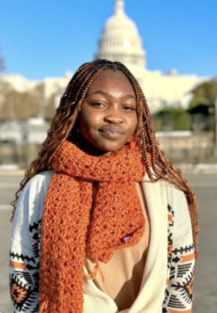
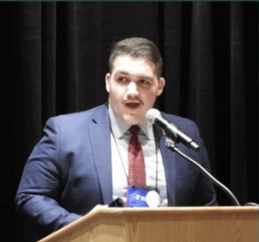
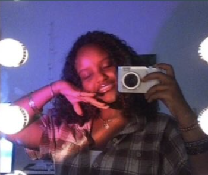
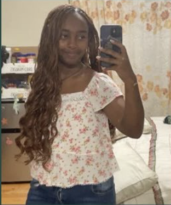

Meet the leaders bringing language exchange to their schools.

About Me: I’m passionate about neuroscience, medicine, and creating change through service and education. My goal is to become a neurosurgeon who advances access to care and equity in healthcare.
Why LinguaLink: I founded LinguaLink, a student-led language exchange community that supports immigrants facing language barriers. I’m also exploring research topics like HIV-associated neurocognitive disorders (HAND) and building leadership experience through school and community initiatives.
I’m committed to growing in STEM, giving back through service, and connecting with others who care about health, equity, and innovation.

Why LinguaLink: I am invested in LinguaLink because it’s necessary to spread cultural and linguistic awareness in our communities. I was a Cuban refugee which showed me the necessity of this.
Languages Spoken: Spanish, English, and am currently learning French.
Fun Facts: I am a semi-pro pickleball player and enjoy cooking!

Why LinguaLink: I’m interested in learning languages because I think it’s amazing to explore different regions and cultures through language. I believe there’s so much beauty in the way languages connect people and allow us to understand different perspectives and traditions.
Languages Spoken: English and Amharic
Fun Facts: I enjoy creative writing!

Why LinguaLink: I want to make learning language easier and specially for English learners so they have the support they need to master the language quickly.
Languages Spoken: English and Amharic
Fun Facts: I moved to the United States 4 years ago from Ethiopia